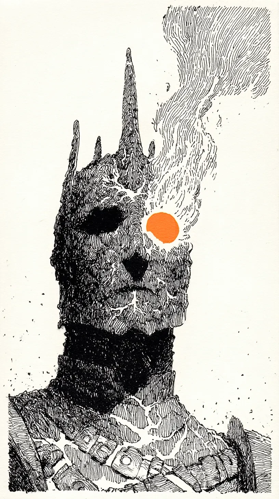

"이제 그만 멈추시오, 폐하." 그 목소리는 죽지도 않고 수 세기 동안 내 귀에 달라붙어 있는 마지막 기억의 파편이었다. \
"Stop now, Your Majesty." The voice was a shard of the last memory that refused to die, clinging to my ear for centuries.
그 하찮은 환영을 보기 위해 숯이 된 목을 돌리는 데에는 돌과 먼지로 이루어진 산 하나를 통째로 움직이는 듯한 소리가 났다. \
To see that pathetic phantom, turning my charcoaled neck made a sound like moving an entire mountain of rock and dust.
역시나, 그는 그림자도 없는 몸으로 내가 내려준 은빛 투구를 마치 성물인 양 품에 안고 있었다. \
Just as I thought, there he was with his shadowless body, clutching the silver helm I’d bestowed upon him as if it were some holy relic.
그는 내 썩어가는 껍데기 아래, 이 성 전체를 녹여버릴 작은 태양이 지금도 즐겁게 고동치고 있다는 사실을 모를 것이다. \
He probably doesn't know that beneath my rotting shell, a small sun that could melt this entire castle is still pulsing joyfully.
그래서 나는 대답 대신, 그가 그토록 원하던 대로 '멈추기' 위해, 수 세기 만에 처음으로 옥좌와 한 몸이 된 엉덩이를 떼어내기 시작했다. \
So, instead of an answer, and to 'stop' just as he so desperately wished, I began to unstick my backside, now one with the throne, for the first time in centuries.